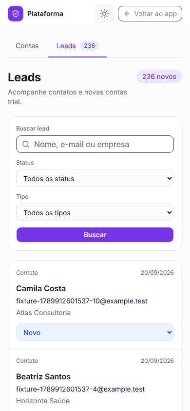
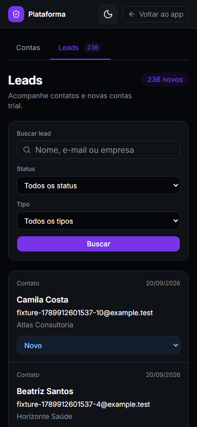

| Peça | Rodada | Referência | Resultado atual | Veredito | O que o crítico apontou |
|---|---|---|---|---|---|
| Banco e APIs | 1 | PostgreSQL / pedido | Migration045 e testes SQL de RLS/triggers/claims PASS | Revisão pendente | Revisor original interrompido por limite de uso |
| Interface | 1 | Pedido / design system | Listagem renderizada; contato e signup E2E PASS | Validação parcial | Execução interrompida após desligamento |
| Push | 1 | Web Push existente | Worker e recibos; testes unitários PASS | E2E pendente | Faltava receiver HTTPS e cron simultâneo |
| Banco e APIs | 2 | PostgreSQL / pedido | SQL real, migration reaplicada, concorrência com2 conexões, 10k/40 medições e API31 testes PASS | APROVADO | Crítico independente: sem achados P1/P2; limites de crash externo declarados |
| Interface | 2 | Pedido / design system |   10 capturas E2E, 4 capturas independentes; reload, console e overflow verificados | APROVADO | Crítica independente em critic-ui.md; dois pontos visuais menores, sem bloqueio |
| Push | 2 | Web Push existente | Dois crons simultâneos, HTTPS/VAPID criptografado, 503/retry e falha parcial em2 assinaturas PASS | APROVADO no ambiente local | Entrega externa em dispositivo real não observada |